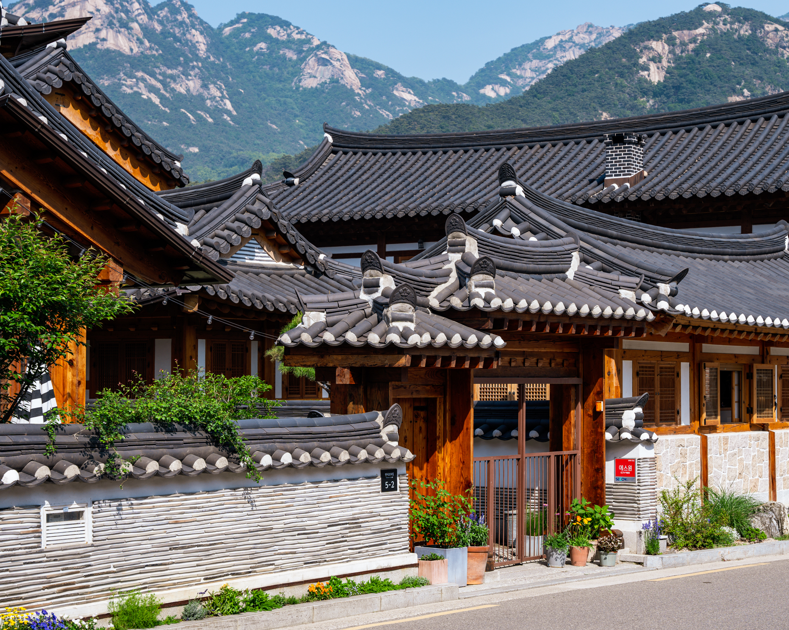
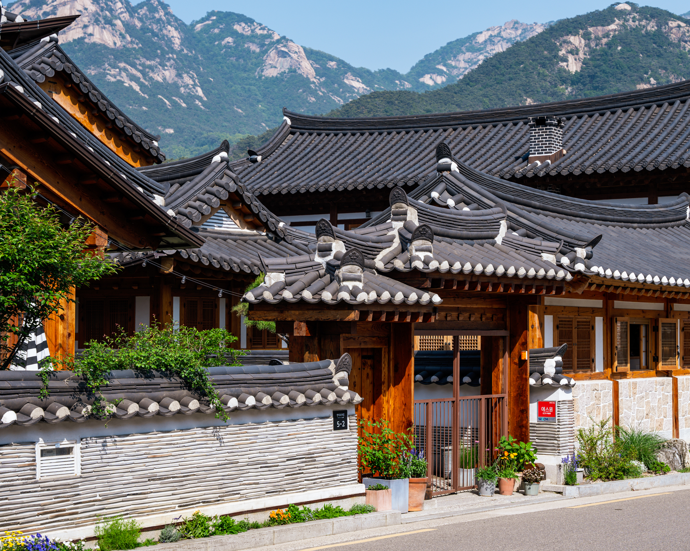
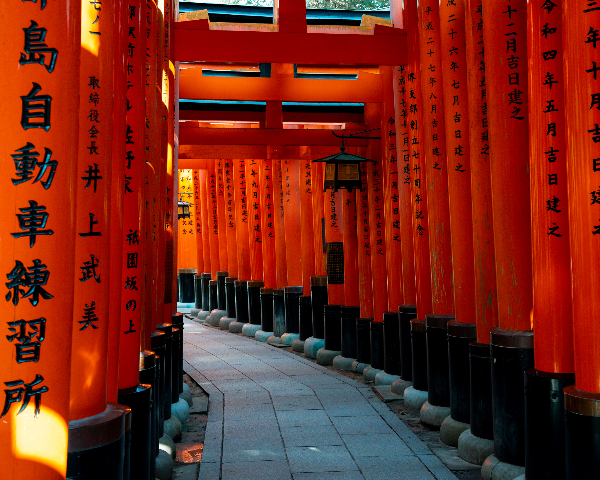
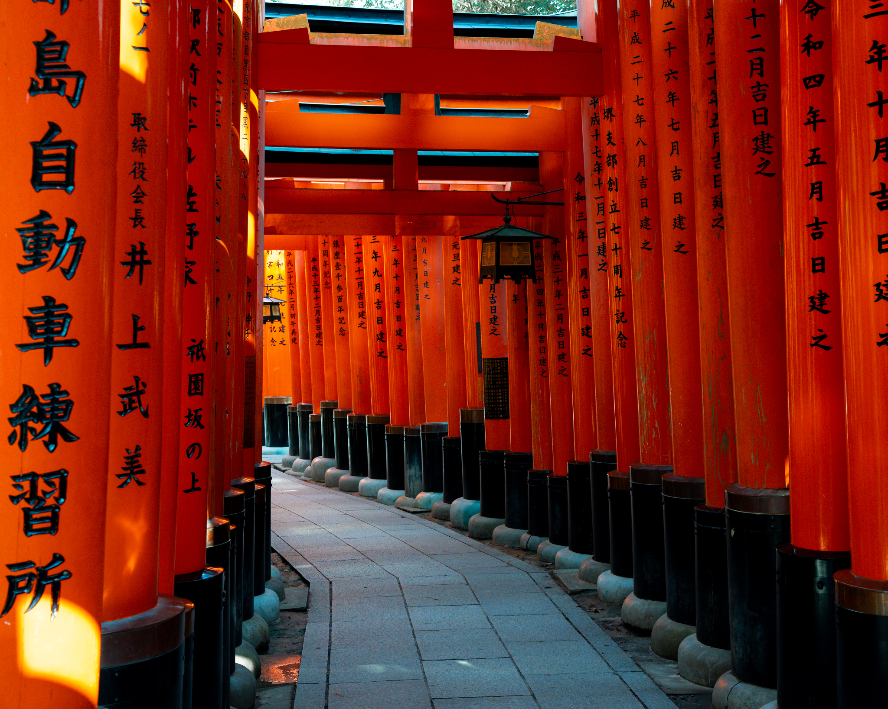

Java
Experienced
Hello, I'm


Hello everyone! I'm Eric, a second year student at the University of British Columbia currently pursuing a Combined Major in Computer Science and Biology. I have a strong passion for Software Development and am striving towards my goal of becoming a Software Engineer. Some of the projects that I have worked on includes this photography portfolio website, an mental health AI chatbot, a program for food lovers to track and recommend restaurants, as well as conducting an analysis of global AirBnb data. One of the fundamental aspects that define me as a person is my mentality of always keeping an open mind, always ready to embrace foreign ideas or acquire new skills. My curious mindset consistently drives me to challenge and apply myself to new situations. Beyond my studies, I love to spend my time taking photos in nature, experimenting with cooking techniques, travelling, snowboarding and playing Ultimate Frisbee.
Experienced
Experienced
Experienced
Experienced
Experienced
Experienced
Basic
Basic
Welcome To My
May 2023 - Korea was a captivating and enriching experience. I was given the opportunity to explore the busy and vibrant streets of Seoul, bustling with energy and the latest trends in fashion and popular Korean culture. Venturing through the famous markets of Myeongdong and Gwangjang left me savoring the Korean street food specialties. I also had the chance to travel further out, towards the beautiful countryside dotted with historical temples, palaces, allowing me to experience the cultural and historical side of Korea. Overall, this beautiful country provided a harmonious blend of modernity, history, culture, cuisine, and nature, leaving me with lasting memories and a desperate urge to visit again.
 



July 2023 - Japan, where age-old customs and contemporary life blend seamlessly. My journey was marked by an array of pilgrimages to ancient shrines and temples. This nation, celebrated for its impressive technological advancements, also boasts an abundance of natural beauty. During the day, I was enveloped by the dynamic atmosphere of Japan's bustling urban centers, with countless soaring skyscrapers and the lively pulse of metropolitans such as Tokyo. By night, the urban landscape transformed, illuminated by a constellation of lights, lanterns and festive decorations, creating an inviting glow that beckoned for leisurely exploration. Experiencing Japan's landscape, which fluidly navigates between urban intensity and rural peace, was an unforgettable journey of discovery.

 



August 2023 - Traveling through China, a country with a rich history spanning thousands of years, was an eye-opening experience. The blend of European-inspired architecture in parts of Shanghai, the serene water town of Suzhou, and Shanghai's numerous gardens showcased a diverse range of beauty. The streets were lively with colorful markets and the inviting scents of street food. At night, the well-known Bund in Shanghai lit up, creating a captivating scene. The beauty of these places was genuinely impressive, making every moment of the trip memorable and leaving me eager to explore more of what China has to offer.

Get in Touch